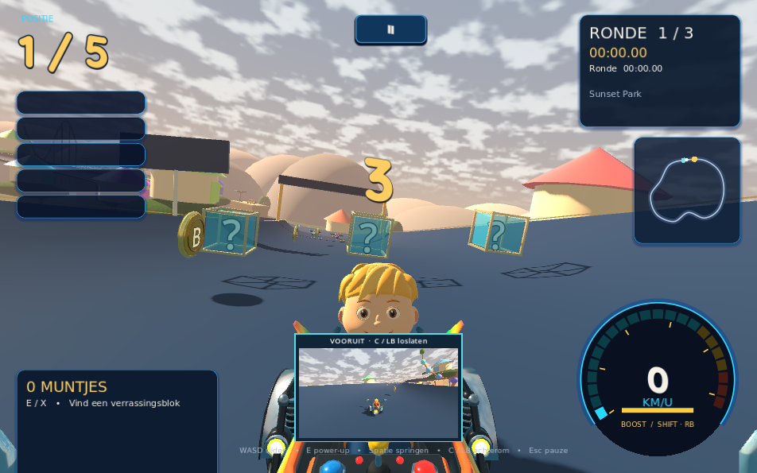
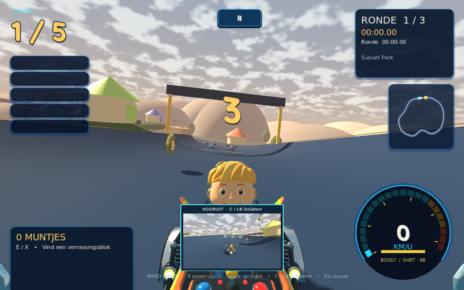
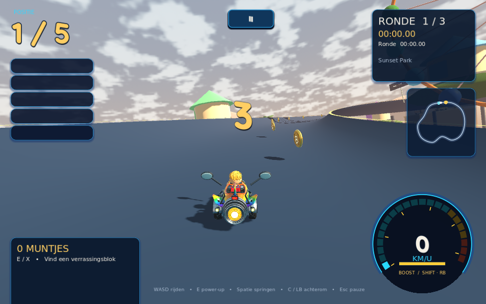
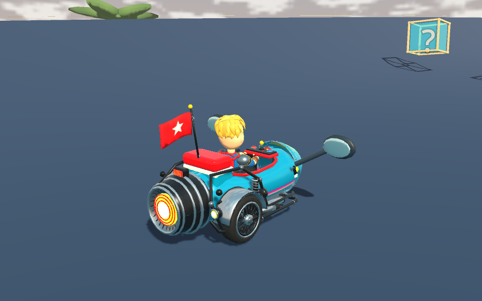
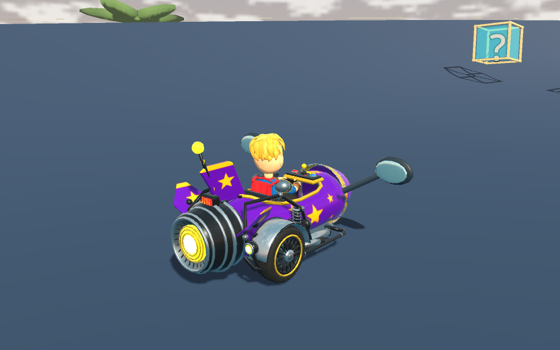
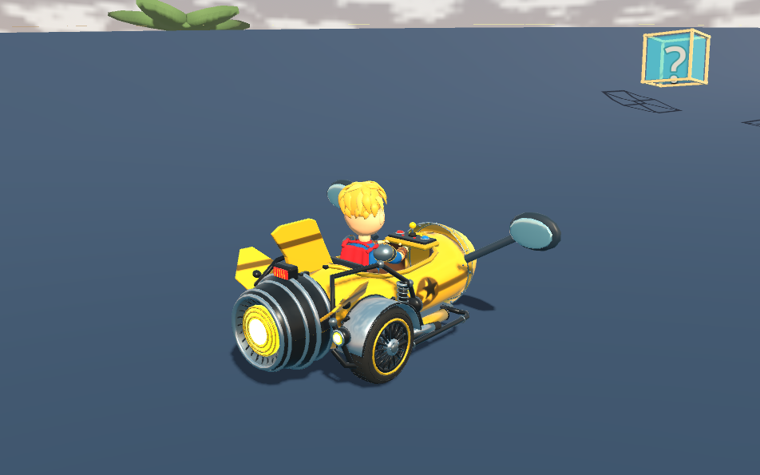
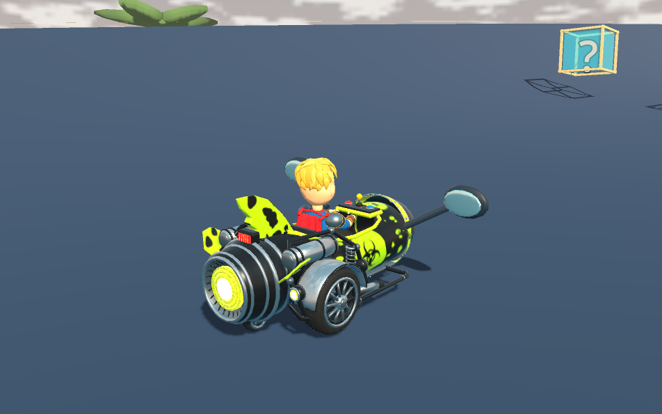
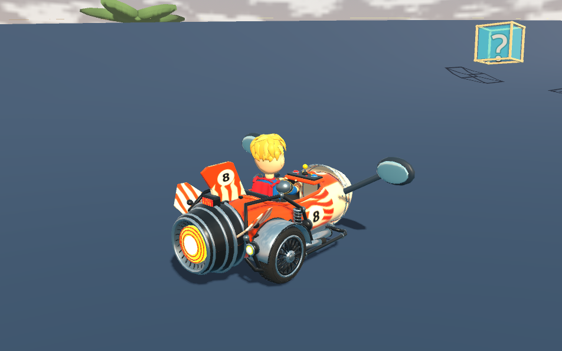
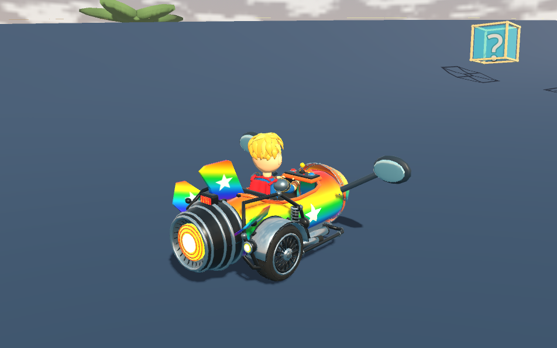
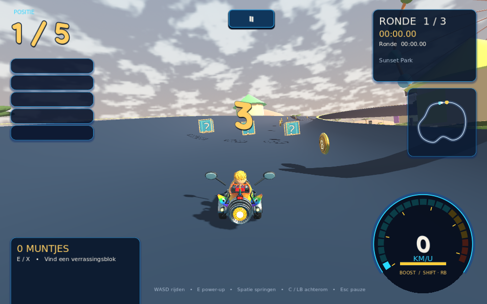

GAME-10001 · stap-24-achteruitkijkspiegels
Native Godot · capture voltooid · metadata · log

Beide camera's volgen het voertuig tijdens achterom kijken
Achteruit als hoofdbeeld · actueel vooruitbeeld in venster
Losgelaten · direct terug naar vooruitbeeld
Twee fysieke spiegels · De Raketfiets
Twee fysieke spiegels · Purple Passion
Twee fysieke spiegels · Golden Rocket
Twee fysieke spiegels · Toxic Turbo
Twee fysieke spiegels · Retro Racer
Twee fysieke spiegels · Rainbow Jet
Vooruitbeeld · C of LB vasthouden voor achterom